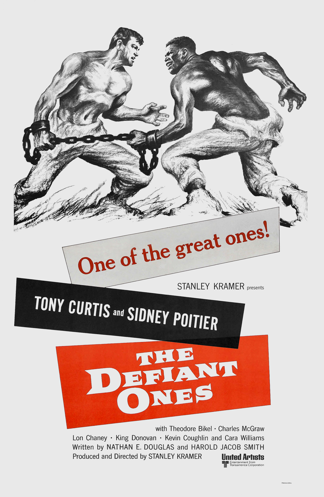

The Defiant Ones
31st Academy Awards
(Oscars 1959)
9 Nominations, 2 Awards
| Nominations | ||
|---|---|---|
| Category | Nominees | Result |
| Best Motion Picture | Stanley Kramer | Nominated |
| Actor | Sidney Poitier | Nominated |
| Actor | Tony Curtis | Nominated |
| Actor in a Supporting Role | Theodore Bikel | Nominated |
| Actress in a Supporting Role | Cara Williams | Nominated |
| Directing | Stanley Kramer | Nominated |
| Writing (Story and Screenplay--written directly for the screen) | Harold Jacob Smith and Nedrick Young | Won |
| Cinematography (Black-and-White) | Sam Leavitt | Won |
| Film Editing | Frederic Knudtson | Nominated |